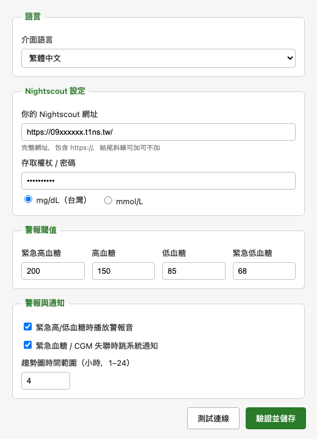

每一項都是真實使用者反饋打磨出來的
數字依血糖等級自動變色：綠 / 黃 / 紅 / 灰。眼角一瞥就知道狀況。
把滑鼠移上來試試 →點擊浮動視窗開啟趨勢圖，含 TIR / 平均 / 最高最低，回診跟醫師討論超有用。
進入緊急狀態時自動發聲。家長半夜小孩低血糖最需要。可關。
繁中 / 简中 / English / 日本語，依系統語言自動偵測。歡迎協助翻譯！
非工程師也能 5 分鐘上手
如果你已經有 NS 站台 → 跳過這步。
歐態 CGM：歐態 App → 我的 → 小歐生態 → Nightscout 開啟
Dexcom / Libre + xDrip+：xDrip+ 設定 Cloud upload
沒有 NS：用 T1NS（台灣社群託管）或自架
我們已經幫你偵測過你的電腦 — 下面的下載按鈕直接是你要的版本。 雙擊執行即可，遇到「無法檢查」/「已損毀」/「SmartScreen」警告都是正常的， 因為這 App 沒花錢買簽章。
前往下載區 ↓
第一次開啟會自動跳設定畫面。把你的 NS 網址（例 https://09xxxxxx.t1ns.tw/）與密碼填進去，
按「測試連線」確認綠燈，再按「驗證並儲存」。
血糖值會出現在桌面右上角 — 可滑鼠拖到任何位置，下次開機會記得位置。

最新版本：載入中... · 看所有版本 ↗
在「應用程式」資料夾右鍵 FloatingGlucose → 開啟 → 仍要開啟
打開 Terminal 貼：xattr -cr /Applications/FloatingGlucose.app
點「其他資訊」→「仍要執行」
下載 uninstall-windows.cmd 雙擊清乾淨再裝
不是醫療器材，不能做任何醫療判斷。任何劑量計算、緊急處理請以你的 CGM、血糖機、醫師建議為準。本軟體可能因網路、CGM 上傳延遲等原因顯示錯誤或過舊的數值。
不會。本軟體唯一的網路連線就是「你的電腦 → 你自己的 Nightscout 網址」，跟你用瀏覽器打開 NS 一樣。完全沒有 telemetry、分析、廣告。設定（含 NS 密碼）只存在你的電腦本機。
是。MIT License。所有程式碼公開在 GitHub，你或你信任的工程師朋友可以審查每一行。
目前版本一台電腦只能設一組 NS。多用戶版正在開發中，預計近期推出，每人一行同時顯示。
App 本身不直接跟 CGM 通訊，所以任何能上傳到 Nightscout 的 CGM 都支援：歐態、Dexcom（透過 xDrip+）、Libre（透過 xDrip+ / Diabox）、Medtronic 700 等。
macOS：應用程式裡拖到垃圾桶。
Windows：設定 → 應用程式 → 解除安裝。如果跳「Installer integrity check has failed」表示舊版 uninstaller 被防毒改壞了，下載 完整移除工具 雙擊清乾淨。
到 GitHub Issues 開單。請不要在 Issue 內貼你的 NS 完整網址或密碼。